Note
Hello, welcome to the SunFounder Raspberry Pi & Arduino & ESP32 Enthusiasts Community on Facebook! Dive deeper into Raspberry Pi, Arduino, and ESP32 with fellow enthusiasts.
Why Join?
Expert Support: Solve post-sale issues and technical challenges with help from our community and team.
Learn & Share: Exchange tips and tutorials to enhance your skills.
Exclusive Previews: Get early access to new product announcements and sneak peeks.
Special Discounts: Enjoy exclusive discounts on our newest products.
Festive Promotions and Giveaways: Take part in giveaways and holiday promotions.
👉 Ready to explore and create with us? Click [here] and join today!
Lesson 7: Create an IR Obstacle Animation
In our previous missions, we used the Infrared Obstacle Avoidance Module to help our GalaxyRVR automatically steer clear of obstacles - just like a real Mars rover navigating the Red Planet!
Now, let’s take this to the next level by combining the physical IR sensors with a virtual Martian landscape. We’ll create an exciting animation game where you control a rover sprite by triggering the real IR sensors with your hands!
Learning Objectives
Discover how the Infrared Obstacle Avoidance Module brings your Mars rover to life
Learn to use IR sensor data to control characters in your Scratch animations
Build your own Mars exploration game where you dodge rocks using real sensors
Creating the Animation Scene
First, Connecting the APP to GalaxyRVR.
Setting up the Mars-themed background
First, we need a Mars-themed stage background. Click to select a backdrop.
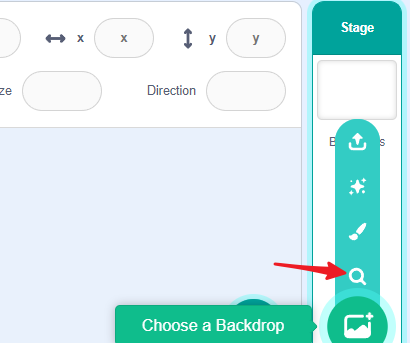
Choose the Mars background.
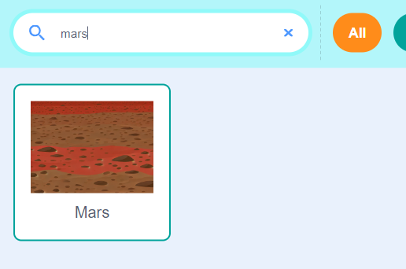
Adding the rover character
Choose the GalaxyRVR sprite from the library and resize it to fit your scene appropriately.
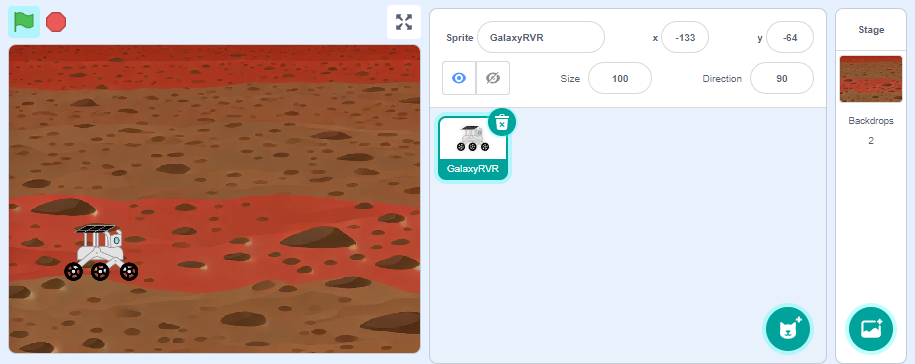
Adding obstacles
Select a Rocks sprite from the library and adjust its size.
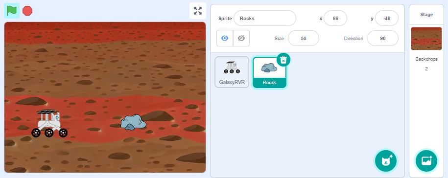
Programming the GalaxyRVR Sprite
Program your GalaxyRVR sprite to travel across the screen from left to right. Your mission: guide it safely past the rocks! Use your hands to trigger the physical rover’s IR sensors - right sensor moves the sprite down, left sensor moves it up.
Set the starting position by moving the sprite to the left edge of the stage. The motion blocks will automatically update with the correct coordinates.
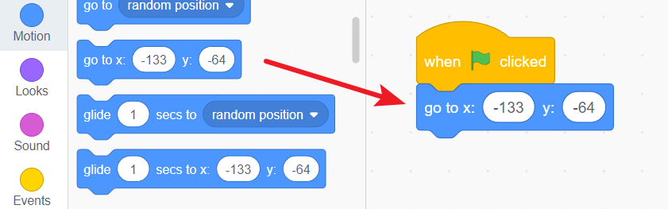
Add a forever block to create the main program loop that runs continuously.
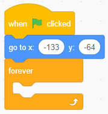
Include a conditional block to check if the rover is touching a rock obstacle.
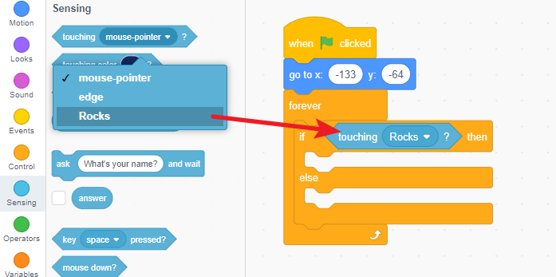
If no rock is detected, keep moving forward toward the right side.
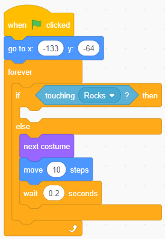
If the rover hits a rock, stop all movement and display a warning message.
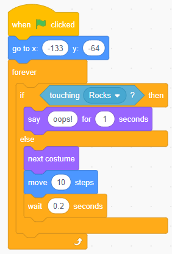
Add sensor controls: create events for both IR sensors that move the sprite up (left sensor) or down (right sensor) when triggered by your hand.
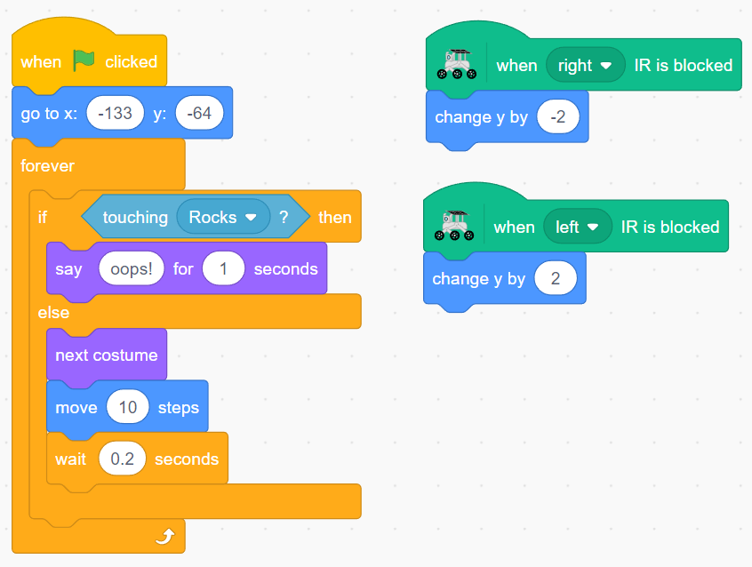
Programming the Rock Sprite
Let’s create multiple rock obstacles to make the game more challenging! We’ll use cloning to generate rocks at random positions on the stage.
Create rock clones using the “create clone of myself” block.
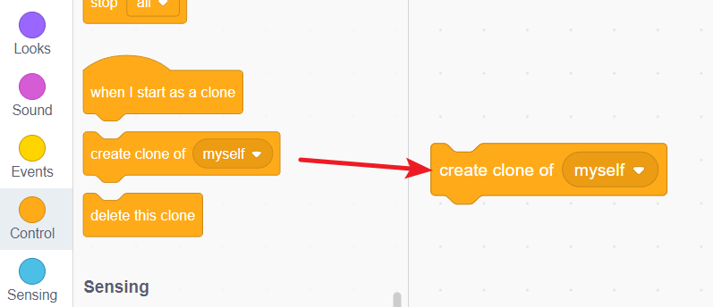
Make each clone appear at a random location by adding the “go to random position” block.
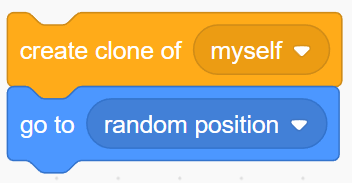
Generate ten rocks by repeating the clone creation ten times.
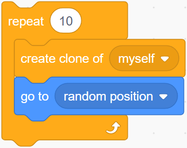
Set all this action to start when the green flag is clicked.
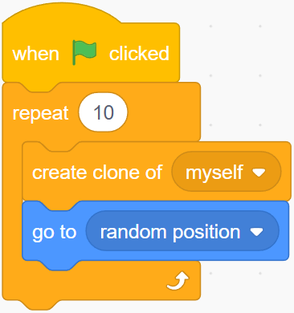
{kind=link}
{kind=link}
{kind=link}
Mission Launch!
Congratulations! Your Mars obstacle avoidance game is ready for launch.
Connect your GalaxyRVR to the APP and click the green flag to begin your mission. Watch as rocks randomly appear across the Martian landscape.
Your challenge: Use your hands to trigger the IR sensors and carefully guide the GalaxyRVR sprite across the screen. Move it up and down to avoid the rocks and reach the right side safely!
Can you complete the mission without any collisions? How quickly can you navigate the obstacle course? Keep practicing to become a master Mars rover pilot!